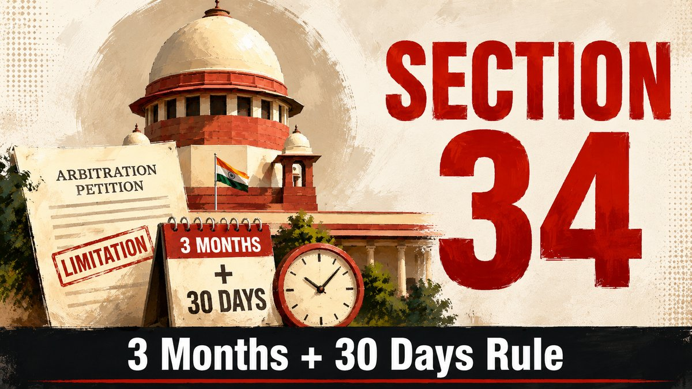

A partly reasoned arbitral award is not invalid simply because a claimant disagrees with the amount awarded. The legally relevant question is whether the reasons are intelligible, whether material issues were addressed and whether a defect meets the narrow grounds under Section 34.

Answer in brief
A Section 34 challenge may succeed when an arbitral award is unreasoned or unintelligible on a material and legally consequential issue, but mere disagreement with the quantum or sufficiency of the arbitrator's reasons is not enough. Section 31(3) ordinarily requires an award to state reasons, subject to its statutory exceptions. The court does not conduct a fresh appeal on facts.
The analysis is claim-specific: which contractual issue was decided, which evidence was relied upon, what material argument was ignored, and whether any identified error falls within Section 34(2) or (for eligible domestic awards) Section 34(2A).
What Section 31(3) requires
Section 31(3) of the Arbitration and Conciliation Act, 1996 ordinarily requires the award to state the reasons on which it is based. Exceptions apply where the parties agreed that no reasons are to be given, or where the award is on agreed terms under Section 30. Otherwise, the reasoning must permit the parties and the court to understand the route from the material issues to the conclusion.
An arbitrator need not write a judgment of the length expected from an appellate court or respond individually to every sentence of a submission. A concise explanation may be sufficient where the decisive reasoning is intelligible on a fair reading of the award and the documents to which it refers.
Three different kinds of reasoning complaint
- Reasons are brief but intelligible: The arbitrator identifies the controlling contractual clause, relevant evidence and why a claim is accepted or rejected. This may withstand Section 34 review even if a party considers the explanation too short.
- Reasons are incomplete: The award deals with some elements of liability or quantum but omits analysis of a material component. Consider whether the reasoning can be understood from the award as a whole or whether a specific curable gap exists.
- Reasons are absent or unintelligible: The award merely recites rival submissions and announces figures without a discernible analysis on a central issue. Depending on the complete record, this may engage the narrow Section 34 grounds and potential Section 34(4) procedures.
Dyna Technologies: intelligibility matters more than length
In Dyna Technologies Pvt. Ltd. v. Crompton Greaves Ltd., (2019) 20 SCC 1, the Supreme Court examined the duty to provide reasons and distinguished inadequate reasoning from an unintelligible award. The Court warned against casual interference with arbitral awards and recognised the potential role of Section 34(4) in allowing a tribunal to address a curable deficiency.
Consequently, a challenger should not plead 'no reasons' merely because the conclusion is unfavourable. Identify the exact claim or issue whose disposition cannot be understood and demonstrate why the defect is material, not stylistic.
Illustration: a principal claim partly allowed
Illustrative facts only: A contractor claims unpaid invoices and delay damages. The arbitrator finds that work was performed and that some payment was delayed, awards a small sum, but rejects the remaining principal claim without identifying the payment entries, contractual basis or evidence supporting the deduction.
A Section 34 challenge should ask: did the parties place invoices, payment acknowledgements, ledgers or correspondence on the arbitral record? Does the award deal with the buyer's defence of payment? Is there an explained basis for the amount allowed, and are the findings internally consistent? The answer should emerge from the actual arbitral record, not from documents produced for the first time after the award.
The mere difference between the amount claimed and awarded is not patent illegality. Nor does an arbitrator's adverse assessment of insufficient proof become reviewable simply because a party believes a larger amount ought to have been allowed.
When do ignored documents or contradictions matter?
A ground becomes materially stronger where the award overlooks crucial evidence already on record, arrives at a conclusion that no reasonable person could sustain, or makes findings irreconcilable with the contractual and evidentiary reasoning necessary to decide the claim. However, the Section 34 court cannot reweigh all testimony and documents merely to select another plausible interpretation.
For each ground, prepare a comparison identifying the exact award paragraph, the claim or defence concerned, the document or admission already placed before the tribunal, and the specific statutory defect said to follow. Differentiate a missing finding from a finding that was made but is factually disputed.
Patent illegality under Section 34(2A)
For domestic arbitral awards to which Section 34(2A) applies, the statute permits a challenge for patent illegality appearing on the face of the award. Its proviso prevents setting aside merely because of erroneous application of law or by reassessment of evidence. Breach of a fundamental contractual restriction, legally impermissible reasoning or truly perverse conclusions require careful analysis under the controlling authorities; every supposed factual or interpretive error is not patent illegality.
The appropriate ground also depends on whether the award is domestic or an international commercial arbitration seated in India, the subject matter, and the particular statutory subsection relied on. See the Section 34 document checklist.
Section 34(4): can the arbitrator cure a deficiency?
Section 34(4) permits the court, on the applicable procedural conditions and where appropriate, to adjourn the setting-aside proceedings to give the arbitral tribunal an opportunity to resume proceedings or take action to eliminate a ground for setting aside. Dyna Technologies recognises the utility of this route for curable defects.
This is not an automatic power to reopen evidence, permit a new decision on every rejected claim, or replace an award after it has been set aside. The proposed cure must be legally permissible and tailored to the identified defect. The stage of the Section 34 proceedings and whether a request is made should be considered under the current binding case law.
Can the court enhance or modify the awarded amount?
In Gayatri Balasamy v. ISG Novasoft Technologies Ltd., 2025 INSC 605 (Constitution Bench; 4:1 majority), the Supreme Court recognised a limited modification jurisdiction under Sections 34 and 37: severance of invalid portions where possible, correction of obvious clerical or computational errors, modification of post-award interest in certain circumstances, and the Supreme Court's cautiously exercised Article 142 power.
That holding is not a general invitation to a Section 34 court to recalculate the contractor's damages or substitute its view of the evidence. The distinction between severing an independent invalid portion and rewriting an interconnected determination is critical. The majority's conclusion, rather than the separate dissent rejecting modification, controls the legal position.
When can only part of an award be set aside?
A discrete determination may be severable where it rests on independent obligations and can be removed without affecting the sustainability of remaining findings. If findings on principal, damages and interest are interdependent, removing one element may unsettle the basis of the rest. The court must test substantive severability, not merely whether the award contains numbered claims.
Gayatri Balasamy addresses partial setting aside and the limited modification power. Plead alternative relief precisely, explaining which part of the award is independent and why. Do not assume every rejected monetary claim can simply be increased by judicial editing.
Limitation and preparation checklist
- Obtain the signed award, any amended or corrected award and reliable evidence of when each was received.
- Check the Section 34(3) three-calendar-month period, the strictly limited further 30 days and any qualifying Section 33 request and its disposal.
- Identify the arbitration agreement, contract provisions, issues, statements of claim and defence, evidence and written submissions actually before the tribunal.
- Create a claim-by-claim table recording amount claimed, amount allowed, award reasons, contractual clause, record evidence and potential Section 34 ground.
- Separate contradictions or absence of reasons from disagreements over assessment of evidence.
- Consider, where sustainable, targeted Section 34(4) relief, severability and the limits established by Gayatri Balasamy.
- Confirm the competent court, fees, procedural directions and any need for a separate stay application under Section 36.
For detailed computation, read Section 34 limitation and court holidays. An award challenge does not by itself automatically stay enforcement.
Frequently asked questions
Can I challenge an award because the arbitrator allowed only a small part of my claim?
Not merely for that reason. Identify a jurisdictional, procedural or patent-illegality defect within Section 34; a disagreement about quantum alone is insufficient.
Does a short award mean the arbitrator gave no reasons?
No. Reasons may be concise but intelligible. Read the award as a whole and distinguish inadequate explanation from an unintelligible or unreasoned conclusion.
Can the Section 34 court examine new invoices or bank statements?
The challenge is generally assessed on the arbitral record and statutory grounds, rather than conducted as a fresh trial. Do not assume new evidence can cure omissions in the arbitral proceedings.
Can the Section 34 court increase the amount awarded?
Not as a routine merits appeal. The Supreme Court's majority in Gayatri Balasamy recognises narrow forms of modification, not general re-assessment of damages or substitution of factual findings.
Related guides
References / Sources
- Arbitration and Conciliation Act, 1996, especially Sections 31(3), 33, 34(2), 34(2A), 34(3), 34(4), 36 and 37.
- Dyna Technologies Pvt. Ltd. v. Crompton Greaves Ltd., Supreme Court, 18 December 2019, (2019) 20 SCC 1, 2019 INSC 1395.
- Gayatri Balasamy v. ISG Novasoft Technologies Ltd., Supreme Court Constitution Bench, 30 April 2025, 2025 INSC 605 (majority).
- Accessible text of Gayatri Balasamy, including the majority judgment and separate dissent.
Disclaimer
Last reviewed: 20 October 2026